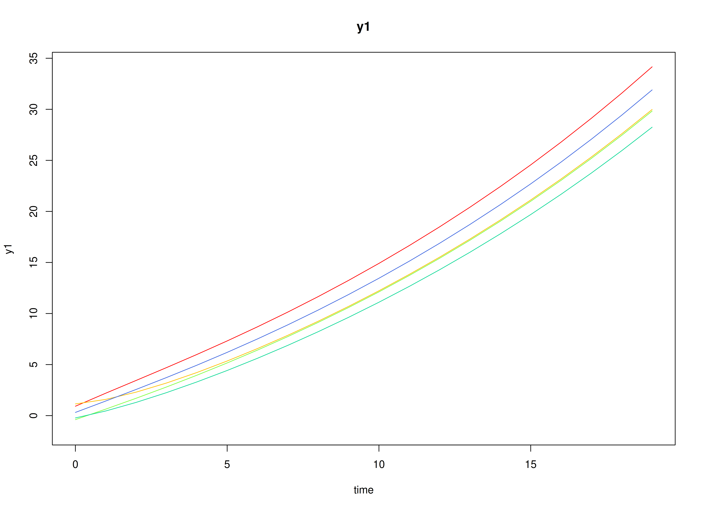
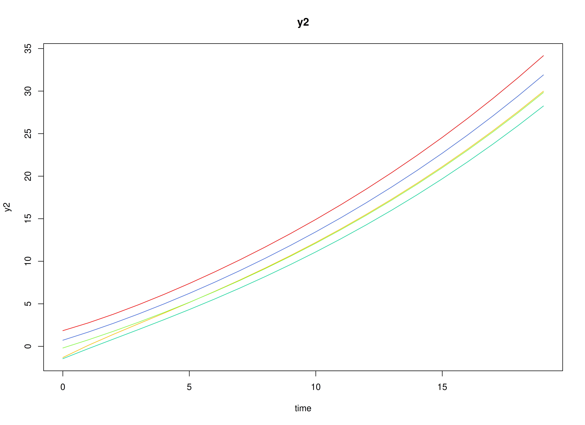
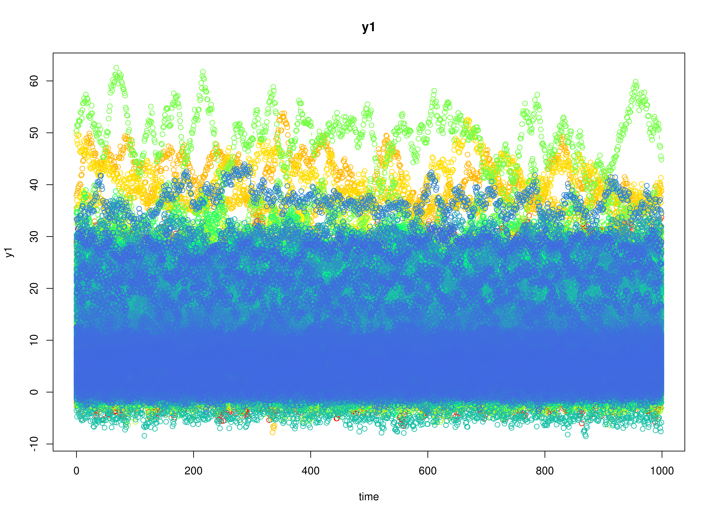
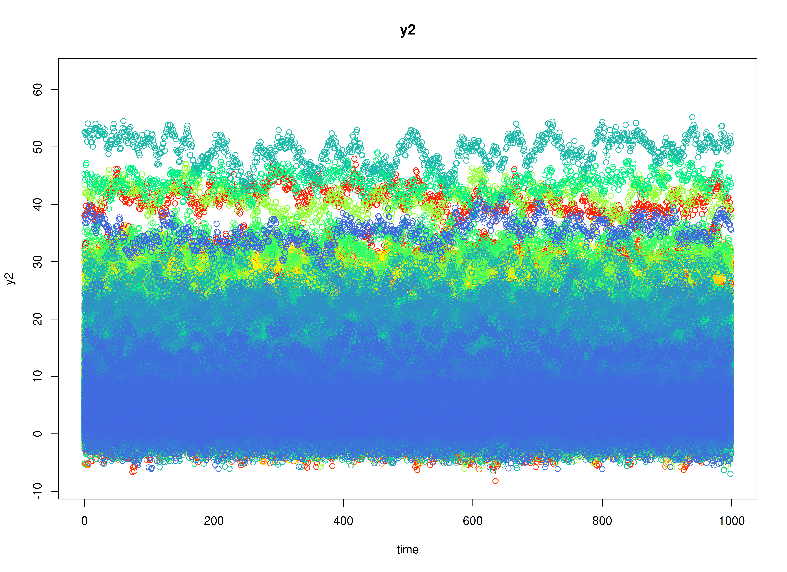

Fit the Discrete-Time Vector Autoregressive Model By ID (Escalating Co-Activation)
Ivan Jacob Agaloos Pesigan
2026-02-01
Source:vignettes/escalating-co-activation-1000.Rmd
escalating-co-activation-1000.RmdDynamics Description
The Escalating Co-Activation process represents a bivariate dynamic system in which two latent constructs—such as stress and rumination—mutually reinforce each other over time. Both constructs display strong autoregressive effects, indicating persistence, and positive cross-effects, suggesting that increases in one tend to amplify the other in subsequent time points.
At the population level, this pattern yields a slow return to equilibrium and, in some cases, near-unstable trajectories that can produce sustained co-activation or escalation. Between-person variability in the transition parameters captures individual differences in the strength of this self-reinforcing loop. The process noise covariance is relatively large and positively correlated, representing shared perturbations that drive both variables upward, while measurement error variance is moderate, reflecting realistic self-report imprecision.
This configuration models a vicious cycle dynamic—common in maladaptive emotional or cognitive processes—where mutual amplification between system components (e.g., stress and rumination) can sustain or exacerbate dysregulation over time.
Model
The measurement model is given by where , , and are random variables and , and are model parameters. represents a vector of observed random variables, a vector of latent random variables, and a vector of random measurement errors, at time and individual . denotes a matrix of factor loadings, and the covariance matrix of that is invariant across individuals. In this model, is an identity matrix and is a symmetric matrix.
The dynamic structure is given by where , , and are random variables, and , and are model parameters. Here, is a vector of latent variables at time and individual , represents a vector of latent variables at time and individual , and represents a vector of dynamic noise at time and individual . is a matrix of autoregression and cross regression coefficients for individual , and the covariance matrix of that is invariant across all individuals. In this model, is a symmetric matrix.
Data Generation
Notation
Let be the number of time points and be the number of individuals. We simulate a total of time points per individual, discarding the first as burn-in. The analysis uses the final measurement occasions.
Let the factor loadings matrix be given by
Let the measurement error covariance matrix be given by
Let the initial condition be given by and are functions of and .
Let the intercept vector be normally distributed with the following means and covariance matrix
Let the transition matrix be normally distributed with the following means and covariance matrix
The SimAlphaN and SimBetaN functions from
the simStateSpace package generate random intercept vectors
and transition matrices from the multivariate normal distribution. Note
that the SimBetaN function generates transition matrices
that are weakly stationary with an option to set lower and upper bounds.
The person-specific set-point vector
was derived from the generated
and
.
Let the dynamic process noise be given by
R Function Arguments
n
#> [1] 1000
time
#> [1] 11000
burnin
#> [1] 10000
# first mu0 in the list of length n
mu0[[1]]
#> [1] 3.979101 5.261786
# first sigma0 in the list of length n
sigma0[[1]]
#> [,1] [,2]
#> [1,] 0.9444850 0.6684182
#> [2,] 0.6684182 1.0861736
# first sigma0_l in the list of length n
sigma0_l[[1]] # sigma0_l <- t(chol(sigma0))
#> [,1] [,2]
#> [1,] 0.9718462 0.000000
#> [2,] 0.6877819 0.783026
# first alpha in the list of length n
alpha[[1]]
#> [1] 0.7342491 1.0337751
# first beta in the list of length n
beta[[1]]
#> [,1] [,2]
#> [1,] 0.76671137 0.0368753
#> [2,] 0.07383966 0.7476920
# first psi in the list of length n
psi[[1]]
#> [,1] [,2]
#> [1,] 0.35 0.2
#> [2,] 0.20 0.4
psi_l[[1]] # psi_l <- t(chol(psi))
#> [,1] [,2]
#> [1,] 0.5916080 0.0000000
#> [2,] 0.3380617 0.5345225
nu
#> [[1]]
#> [1] 0 0
lambda
#> [[1]]
#> [,1] [,2]
#> [1,] 1 0
#> [2,] 0 1
theta
#> [[1]]
#> [,1] [,2]
#> [1,] 0.5 0.0
#> [2,] 0.0 0.5
theta_l # theta_l <- t(chol(theta))
#> [[1]]
#> [,1] [,2]
#> [1,] 0.7071068 0.0000000
#> [2,] 0.0000000 0.7071068
# first mu_eta (set-point) in the list of length n
mu_eta[[1]]
#> [1] 3.979101 5.261786Visualizing the Dynamics Without Process Noise and Measurement Error (n = 5 with Different Initial Condition)


Using the SimSSMIVary Function from the
simStateSpace Package to Simulate Data
library(simStateSpace)
sim <- SimSSMIVary(
n = n,
time = time,
mu0 = mu0,
sigma0_l = sigma0_l,
alpha = alpha,
beta = beta,
psi_l = psi_l,
nu = nu,
lambda = lambda,
theta_l = theta_l
)
data <- as.data.frame(sim, burnin = burnin)
head(data)
#> id time y1 y2
#> 1 1 0 4.697993 6.174017
#> 2 1 1 6.122606 5.793871
#> 3 1 2 5.539980 5.582454
#> 4 1 3 5.022958 6.170438
#> 5 1 4 5.907917 6.090866
#> 6 1 5 5.464929 3.791365
plot(sim, burnin = burnin)

Model Fitting
The FitDTVARMxID function fits a DT-VAR model on each
individual
.
To set up the estimation, we first provide starting
values for each parameter matrix.
Set-Point (mu_eta)
The set-point vector is initialized with starting values.
mu_eta_values <- mu_etaAutoregressive Parameters (beta)
We initialize the autoregressive coefficient matrix with the true values used in simulation.
beta_values <- betaLDL’-parameterized covariance matrices
Covariances such as psi and theta are
estimated using the LDL’ decomposition of a positive definite covariance
matrix. The decomposition expresses a covariance matrix
as
where: -
is a strictly lower-triangular matrix of free parameters
(l_mat_strict),
-
is the identity matrix,
-
is an unconstrained vector,
-
ensures strictly positive diagonal entries.
The LDL() function extracts this decomposition from a
positive definite covariance matrix. It returns:
- d_uc: unconstrained diagonal parameters, equal to
InvSoftplus(d_vec),
- d_vec: diagonal entries, equal to
Softplus(d_uc),
- l_mat_strict: the strictly lower-triangular factor.
sigma <- matrix(
data = c(1.0, 0.5, 0.5, 1.0),
nrow = 2,
ncol = 2
)
ldl_sigma <- LDL(sigma)
d_uc <- ldl_sigma$d_uc
l_mat_strict <- ldl_sigma$l_mat_strict
I <- diag(2)
sigma_reconstructed <- (l_mat_strict + I) %*% diag(log1p(exp(d_uc)), 2) %*% t(l_mat_strict + I)
sigma_reconstructed
#> [,1] [,2]
#> [1,] 1.0 0.5
#> [2,] 0.5 1.0Process Noise Covariance Matrix (psi)
Starting values for the process noise covariance matrix are given below, with corresponding LDL’ parameters.
psi_values <- psi[[1]]
ldl_psi_values <- LDL(psi_values)
psi_d_values <- ldl_psi_values$d_uc
psi_l_values <- ldl_psi_values$l_mat_strict
psi_d_values
#> [1] -0.8697232 -1.1065068
psi_l_values
#> [,1] [,2]
#> [1,] 0.0000000 0
#> [2,] 0.5714286 0Measurement Error Covariance Matrix (theta)
Starting values for the measurement error covariance matrix are given below, with corresponding LDL’ parameters.
theta_values <- theta[[1]]
ldl_theta_values <- LDL(theta_values)
theta_d_values <- ldl_theta_values$d_uc
theta_l_values <- ldl_theta_values$l_mat_strict
theta_d_values
#> [1] -0.4327521 -0.4327521
theta_l_values
#> [,1] [,2]
#> [1,] 0 0
#> [2,] 0 0Initial mean vector (mu_0) and covariance matrix
(sigma_0)
The initial mean vector
and covariance matrix
are fixed using mu0 and sigma0.
mu0_values <- mu0
FitDTVARMxID
fit <- FitDTVARMxID(
data = data,
observed = c("y1", "y2"),
id = "id",
center = TRUE,
mu_eta_values = mu_eta_values,
beta_values = beta_values,
psi_d_values = psi_d_values,
psi_l_values = psi_l_values,
theta_d_values = theta_d_values,
mu0_values = mu0_values,
sigma0_d_values = sigma0_d_values,
sigma0_l_values = sigma0_l_values,
ncores = parallel::detectCores()
)Parameter estimates
head(summary(fit))
#> beta_1_1 beta_2_1 beta_1_2 beta_2_2
#> FitDTVARMxID_DTVAR_ID1.Rds 0.8758739 0.06980566 -0.04782908 0.7607040
#> FitDTVARMxID_DTVAR_ID2.Rds 0.6441904 -0.22484340 0.09571917 0.9399838
#> FitDTVARMxID_DTVAR_ID3.Rds 0.7946076 0.10527667 0.33387178 0.6895026
#> FitDTVARMxID_DTVAR_ID4.Rds 0.8381163 0.20027095 0.07653694 0.5060161
#> FitDTVARMxID_DTVAR_ID5.Rds 0.8214917 0.11109383 0.08229443 0.8553835
#> FitDTVARMxID_DTVAR_ID6.Rds 0.5267410 -0.11081204 0.20395749 0.6069352
#> mu_eta_1_1 mu_eta_2_1 psi_l_2_1 psi_d_1_1
#> FitDTVARMxID_DTVAR_ID1.Rds 4.075797 5.325837 0.6867072 -1.3318704
#> FitDTVARMxID_DTVAR_ID2.Rds 7.583295 6.301787 0.6215924 -0.8054012
#> FitDTVARMxID_DTVAR_ID3.Rds 24.442146 11.337333 0.5936404 -0.8989028
#> FitDTVARMxID_DTVAR_ID4.Rds 16.728504 11.594649 0.6589971 -1.0581211
#> FitDTVARMxID_DTVAR_ID5.Rds 14.877025 23.754310 0.6950561 -1.0394769
#> FitDTVARMxID_DTVAR_ID6.Rds 3.114842 1.722967 0.6260117 -0.8201061
#> psi_d_2_1 theta_d_1_1 theta_d_2_1
#> FitDTVARMxID_DTVAR_ID1.Rds -1.5159321 -0.2852040 -0.4999119
#> FitDTVARMxID_DTVAR_ID2.Rds -1.7101736 -0.4796943 -0.2688015
#> FitDTVARMxID_DTVAR_ID3.Rds -0.8905995 -0.5724221 -0.6011569
#> FitDTVARMxID_DTVAR_ID4.Rds -1.1689994 -0.3153879 -0.4663390
#> FitDTVARMxID_DTVAR_ID5.Rds -1.2347727 -0.4597019 -0.5121433
#> FitDTVARMxID_DTVAR_ID6.Rds -0.4541105 -0.4560209 -0.9659768Proportion of converged cases
converged(
fit,
theta_tol = 0.01,
prop = TRUE
)
#> [1] 0.949Fixed-Effect Meta-Analysis of Measurement Error
When fitting DT-VAR models per person, separating process noise () from measurement error () can be unstable for some individuals. To stabilize inference, we first pool the person-level estimates from only the converged fits using a fixed-effect meta-analysis. This yields a high-precision estimate of the common measurement-error covariance that we will then hold fixed in a second pass of model fitting.
What the code does: - Selects individuals that converged and whose
diagonals exceed a small threshold (theta_tol), filtering
out near-zero or ill-conditioned solutions. - Extracts each person’s
LDL’ diagonal parameters for
and their sampling covariance matrices. - Computes the
inverse-variance-weighted pooled estimate (fixed effect), returning it
on the same LDL’ parameterization used by
FitDTVARMxID().
library(metaDyn)
fixed_theta <- MetaVARMx(
fit,
random = FALSE, # TRUE by default
effects = FALSE, # TRUE by default
cov_meas = TRUE, # FALSE by default
theta_tol = 0.01,
ncores = parallel::detectCores()
)You can read summary(fixed_theta) as providing the
pooled (fixed) measurement-error scale that is common across persons. If
individual instruments truly share the same reliability structure,
fixing
to this pooled value improves stability and often reduces bias in the
dynamic parameters.
Note: Fixed-effect pooling assumes a common across individuals.
coef(fixed_theta)
#> alpha_1_1 alpha_2_1
#> -0.3897896 -0.3833341
summary(fixed_theta)
#> [1] 0
#> Call:
#> MetaVARMx(object = fit, random = FALSE, effects = FALSE, cov_meas = TRUE,
#> theta_tol = 0.01, ncores = parallel::detectCores())
#>
#> CI type = "normal"
#> est se z p 2.5% 97.5%
#> alpha[1,1] -0.3898 0.0047 -82.1074 0 -0.3991 -0.3805
#> alpha[2,1] -0.3833 0.0051 -75.1412 0 -0.3933 -0.3733
theta_d_values <- coef(fixed_theta)Refit the model with fixed measurement error covariance matrix
We refit the individual models using the pooled as a fixed measurement-error covariance matrix.
fit <- FitDTVARMxID(
data = data,
observed = c("y1", "y2"),
id = "id",
center = TRUE,
mu_eta_values = mu_eta_values,
beta_values = beta_values,
psi_d_values = psi_d_values,
psi_l_values = psi_l_values,
theta_fixed = TRUE,
theta_d_values = theta_d_values,
mu0_values = mu0_values,
sigma0_d_values = sigma0_d_values,
sigma0_l_values = sigma0_l_values,
ncores = parallel::detectCores()
)With fixed, the re-estimation focuses on the dynamic structure (, , ). In practice, this often increases the proportion of converged fits and yields more stable cross-lag estimates.
Proportion of converged cases
converged(
fit,
prop = TRUE
)
#> [1] 1Random-Effects Meta-Analysis of Person-Specific Dynamics and Means
Having stabilized , we synthesize the person-specific estimates to recover population-level effects and their between-person variability. We use a random-effects model so the pooled mean reflects both within-person estimation uncertainty and between-person heterogeneity.
random <- MetaVARMx(
fit,
effects = TRUE,
set_point = TRUE,
robust_v = FALSE,
robust = TRUE,
ncores = parallel::detectCores()
)
summary(random)
#> [1] 0
#> Call:
#> MetaVARMx(object = fit, effects = TRUE, set_point = TRUE, robust_v = FALSE,
#> robust = TRUE, ncores = parallel::detectCores())
#>
#> CI type = "normal"
#> est se z p 2.5% 97.5%
#> alpha[1,1] 6.3755 0.1971 32.3483 0.0000 5.9893 6.7618
#> alpha[2,1] 5.9803 0.1926 31.0528 0.0000 5.6028 6.3577
#> alpha[3,1] 0.6758 0.0048 141.0167 0.0000 0.6664 0.6852
#> alpha[4,1] 0.0504 0.0046 11.0059 0.0000 0.0414 0.0594
#> alpha[5,1] 0.1116 0.0050 22.3277 0.0000 0.1018 0.1214
#> alpha[6,1] 0.7084 0.0045 155.8597 0.0000 0.6995 0.7173
#> tau_sqr[1,1] 38.8258 1.7417 22.2913 0.0000 35.4121 42.2396
#> tau_sqr[2,1] 21.2984 1.3780 15.4555 0.0000 18.5975 23.9993
#> tau_sqr[3,1] 0.3431 0.0309 11.0924 0.0000 0.2825 0.4038
#> tau_sqr[4,1] 0.0862 0.0277 3.1112 0.0019 0.0319 0.1405
#> tau_sqr[5,1] 0.4483 0.0340 13.1937 0.0000 0.3817 0.5148
#> tau_sqr[6,1] 0.1528 0.0283 5.3955 0.0000 0.0973 0.2084
#> tau_sqr[2,2] 37.0694 1.6614 22.3118 0.0000 33.8131 40.3258
#> tau_sqr[3,2] 0.0470 0.0292 1.6080 0.1078 -0.0103 0.1044
#> tau_sqr[4,2] 0.3740 0.0303 12.3333 0.0000 0.3146 0.4334
#> tau_sqr[5,2] 0.0649 0.0299 2.1700 0.0300 0.0063 0.1236
#> tau_sqr[6,2] 0.3366 0.0290 11.6234 0.0000 0.2799 0.3934
#> tau_sqr[3,3] 0.0194 0.0010 18.6354 0.0000 0.0174 0.0215
#> tau_sqr[4,3] 0.0055 0.0007 7.4754 0.0000 0.0041 0.0069
#> tau_sqr[5,3] 0.0020 0.0007 2.6967 0.0070 0.0005 0.0035
#> tau_sqr[6,3] -0.0011 0.0007 -1.5952 0.1107 -0.0024 0.0002
#> tau_sqr[4,4] 0.0173 0.0009 18.4145 0.0000 0.0155 0.0192
#> tau_sqr[5,4] -0.0056 0.0007 -7.8065 0.0000 -0.0071 -0.0042
#> tau_sqr[6,4] 0.0005 0.0007 0.8116 0.4170 -0.0008 0.0018
#> tau_sqr[5,5] 0.0220 0.0011 19.9406 0.0000 0.0198 0.0241
#> tau_sqr[6,5] 0.0065 0.0008 8.5921 0.0000 0.0050 0.0080
#> tau_sqr[6,6] 0.0174 0.0009 18.5296 0.0000 0.0155 0.0192
#> i_sqr[1,1] 0.9999 0.0000 255261.2495 0.0000 0.9999 0.9999
#> i_sqr[2,1] 0.9999 0.0000 246788.6126 0.0000 0.9999 0.9999
#> i_sqr[3,1] 0.9607 0.0020 473.9396 0.0000 0.9567 0.9647
#> i_sqr[4,1] 0.9571 0.0022 438.7215 0.0000 0.9529 0.9614
#> i_sqr[5,1] 0.9872 0.0006 1661.7430 0.0000 0.9860 0.9884
#> i_sqr[6,1] 0.9861 0.0007 1515.8741 0.0000 0.9848 0.9874Normal Theory Confidence Intervals
confint(random, level = 0.95, lb = FALSE)
#> 2.5 % 97.5 %
#> alpha[1,1] 5.9892576098 6.7618378021
#> alpha[2,1] 5.6028056698 6.3577188620
#> alpha[3,1] 0.6664360056 0.6852224473
#> alpha[4,1] 0.0414374820 0.0593939047
#> alpha[5,1] 0.1018300454 0.1214280508
#> alpha[6,1] 0.6995296013 0.7173470861
#> tau_sqr[1,1] 35.4120750640 42.2395971685
#> tau_sqr[2,1] 18.5974999675 23.9993416021
#> tau_sqr[3,1] 0.2825075854 0.4037681572
#> tau_sqr[4,1] 0.0318989311 0.1405127986
#> tau_sqr[5,1] 0.3816666406 0.5148465601
#> tau_sqr[6,1] 0.0973237405 0.2083701132
#> tau_sqr[2,2] 33.8130875906 40.3257528507
#> tau_sqr[3,2] -0.0102931352 0.1043557966
#> tau_sqr[4,2] 0.3145551423 0.4334202739
#> tau_sqr[5,2] 0.0062871509 0.1236012294
#> tau_sqr[6,2] 0.2798682087 0.3933950738
#> tau_sqr[3,3] 0.0173722048 0.0214559195
#> tau_sqr[4,3] 0.0040594949 0.0069446781
#> tau_sqr[5,3] 0.0005472225 0.0034589584
#> tau_sqr[6,3] -0.0024046498 0.0002467261
#> tau_sqr[4,4] 0.0154763347 0.0191632367
#> tau_sqr[5,4] -0.0070610283 -0.0042269759
#> tau_sqr[6,4] -0.0007523962 0.0018158224
#> tau_sqr[5,5] 0.0198137372 0.0241333048
#> tau_sqr[6,5] 0.0050204617 0.0079878013
#> tau_sqr[6,6] 0.0155193817 0.0191908515
#> i_sqr[1,1] 0.9999049920 0.9999203472
#> i_sqr[2,1] 0.9999016324 0.9999175147
#> i_sqr[3,1] 0.9567476579 0.9646937249
#> i_sqr[4,1] 0.9528563144 0.9614081846
#> i_sqr[5,1] 0.9860441804 0.9883729318
#> i_sqr[6,1] 0.9848245188 0.9873744924
confint(random, level = 0.99, lb = FALSE)
#> 0.5 % 99.5 %
#> alpha[1,1] 5.867876e+00 6.8832189475
#> alpha[2,1] 5.484200e+00 6.4763243205
#> alpha[3,1] 6.634844e-01 0.6881740112
#> alpha[4,1] 3.861632e-02 0.0622150632
#> alpha[5,1] 9.875098e-02 0.1245071206
#> alpha[6,1] 6.967303e-01 0.7201464158
#> tau_sqr[1,1] 3.433939e+01 43.3122786341
#> tau_sqr[2,1] 1.774881e+01 24.8480324321
#> tau_sqr[3,1] 2.634562e-01 0.4228195738
#> tau_sqr[4,1] 1.483446e-02 0.1575772739
#> tau_sqr[5,1] 3.607426e-01 0.5357706419
#> tau_sqr[6,1] 7.987709e-02 0.2258167628
#> tau_sqr[2,2] 3.278987e+01 41.3489667208
#> tau_sqr[3,2] -2.830579e-02 0.1223684493
#> tau_sqr[4,2] 2.958801e-01 0.4520953396
#> tau_sqr[5,2] -1.214423e-02 0.1420326069
#> tau_sqr[6,2] 2.620318e-01 0.4112314370
#> tau_sqr[3,3] 1.673061e-02 0.0220975175
#> tau_sqr[4,3] 3.606200e-03 0.0073979733
#> tau_sqr[5,3] 8.975566e-05 0.0039164253
#> tau_sqr[6,3] -2.821211e-03 0.0006632875
#> tau_sqr[4,4] 1.489708e-02 0.0197424910
#> tau_sqr[5,4] -7.506290e-03 -0.0037817140
#> tau_sqr[6,4] -1.155893e-03 0.0022193188
#> tau_sqr[5,5] 1.913508e-02 0.0248119580
#> tau_sqr[6,5] 4.554259e-03 0.0084540041
#> tau_sqr[6,6] 1.494255e-02 0.0197676812
#> i_sqr[1,1] 9.999026e-01 0.9999227597
#> i_sqr[2,1] 9.998991e-01 0.9999200100
#> i_sqr[3,1] 9.554992e-01 0.9659421426
#> i_sqr[4,1] 9.515127e-01 0.9627517808
#> i_sqr[5,1] 9.856783e-01 0.9887388052
#> i_sqr[6,1] 9.844239e-01 0.9877751223Robust Confidence Intervals
confint(random, level = 0.95, lb = FALSE, robust = TRUE)
#> 2.5 % 97.5 %
#> alpha[1,1] 5.9877509633 6.763344449
#> alpha[2,1] 5.6016341840 6.358890348
#> alpha[3,1] 0.6659894710 0.685668982
#> alpha[4,1] 0.0412731461 0.059558241
#> alpha[5,1] 0.1017712352 0.121486861
#> alpha[6,1] 0.6991210127 0.717755675
#> tau_sqr[1,1] 31.7884605624 45.863211670
#> tau_sqr[2,1] 16.7517210277 25.845120542
#> tau_sqr[3,1] 0.2843972579 0.401878485
#> tau_sqr[4,1] 0.0376020434 0.134809686
#> tau_sqr[5,1] 0.3715495612 0.524963640
#> tau_sqr[6,1] 0.0914715382 0.214222316
#> tau_sqr[2,2] 29.6110302896 44.527810152
#> tau_sqr[3,2] -0.0051303711 0.099193033
#> tau_sqr[4,2] 0.3071073962 0.440868020
#> tau_sqr[5,2] 0.0156328271 0.114255553
#> tau_sqr[6,2] 0.2816447153 0.391618567
#> tau_sqr[3,3] 0.0172526668 0.021575457
#> tau_sqr[4,3] 0.0038894871 0.007114686
#> tau_sqr[5,3] 0.0003713106 0.003634870
#> tau_sqr[6,3] -0.0024598717 0.000301948
#> tau_sqr[4,4] 0.0153897596 0.019249812
#> tau_sqr[5,4] -0.0070369423 -0.004251062
#> tau_sqr[6,4] -0.0008662858 0.001929712
#> tau_sqr[5,5] 0.0197826328 0.024164409
#> tau_sqr[6,5] 0.0048996366 0.008108626
#> tau_sqr[6,6] 0.0154132629 0.019296970
#> i_sqr[1,1] 0.9998968425 0.999928497
#> i_sqr[2,1] 0.9998914457 0.999927701
#> i_sqr[3,1] 0.9565123460 0.964929037
#> i_sqr[4,1] 0.9528686747 0.961395824
#> i_sqr[5,1] 0.9858217677 0.988595345
#> i_sqr[6,1] 0.9846943236 0.987504688
confint(random, level = 0.99, lb = FALSE, robust = TRUE)
#> 0.5 % 99.5 %
#> alpha[1,1] 5.8658963954 6.8851990165
#> alpha[2,1] 5.4826606180 6.4778639138
#> alpha[3,1] 0.6628975957 0.6887608571
#> alpha[4,1] 0.0384003495 0.0624310372
#> alpha[5,1] 0.0986736859 0.1245844102
#> alpha[6,1] 0.6961932951 0.7206833922
#> tau_sqr[1,1] 29.5771568983 48.0745153342
#> tau_sqr[2,1] 15.3230444202 27.2737971495
#> tau_sqr[3,1] 0.2659396194 0.4203361232
#> tau_sqr[4,1] 0.0223296158 0.1500821139
#> tau_sqr[5,1] 0.3474464626 0.5490667381
#> tau_sqr[6,1] 0.0721859934 0.2335078604
#> tau_sqr[2,2] 27.2674343203 46.8714061210
#> tau_sqr[3,2] -0.0215207657 0.1155834271
#> tau_sqr[4,2] 0.2860920791 0.4618833371
#> tau_sqr[5,2] 0.0001380738 0.1297503065
#> tau_sqr[6,2] 0.2643665710 0.4088967116
#> tau_sqr[3,3] 0.0165735072 0.0222546171
#> tau_sqr[4,3] 0.0033827717 0.0076214013
#> tau_sqr[5,3] -0.0001414319 0.0041476128
#> tau_sqr[6,3] -0.0028937850 0.0007358613
#> tau_sqr[4,4] 0.0147833014 0.0198562700
#> tau_sqr[5,4] -0.0074746359 -0.0038133684
#> tau_sqr[6,4] -0.0013055689 0.0023689951
#> tau_sqr[5,5] 0.0190942058 0.0248528361
#> tau_sqr[6,5] 0.0043954678 0.0086127951
#> tau_sqr[6,6] 0.0148030883 0.0199071450
#> i_sqr[1,1] 0.9998918692 0.9999334700
#> i_sqr[2,1] 0.9998857496 0.9999333974
#> i_sqr[3,1] 0.9551899880 0.9662513948
#> i_sqr[4,1] 0.9515289624 0.9627355367
#> i_sqr[5,1] 0.9853860072 0.9890311051
#> i_sqr[6,1] 0.9842527834 0.9879462279Profile-Likelihood Confidence Intervals
confint(random, level = 0.95, lb = TRUE)
#> Error in `[.data.frame`:
#> ! undefined columns selected
confint(random, level = 0.99, lb = TRUE)
#> Error in `[.data.frame`:
#> ! undefined columns selected- The fixed part of the random-effects model gives pooled means .
- The random part yields between-person covariances () quantifying heterogeneity in set-point () and dynamics () across individuals.
means <- extract(random, what = "alpha")
means
#> [1] 6.37554771 5.98026227 0.67582923 0.05041569 0.11162905 0.70843834
covariances <- extract(random, what = "tau_sqr")
covariances
#> [,1] [,2] [,3] [,4] [,5]
#> [1,] 38.82583612 21.29842078 0.343137871 0.0862058649 0.448256600
#> [2,] 21.29842078 37.06942022 0.047031331 0.3739877081 0.064944190
#> [3,] 0.34313787 0.04703133 0.019414062 0.0055020865 0.002003090
#> [4,] 0.08620586 0.37398771 0.005502086 0.0173197857 -0.005644002
#> [5,] 0.44825660 0.06494419 0.002003090 -0.0056440021 0.021973521
#> [6,] 0.15284693 0.33663164 -0.001078962 0.0005317131 0.006504131
#> [,6]
#> [1,] 0.1528469269
#> [2,] 0.3366316413
#> [3,] -0.0010789618
#> [4,] 0.0005317131
#> [5,] 0.0065041315
#> [6,] 0.0173551166Finally, we compare the meta-analytic population estimates to the known generating values.
pop_mean
#> [1] 6.28825913 5.98495580 0.65102637 0.06119726 0.11709416 0.69102888
pop_cov
#> [,1] [,2] [,3] [,4] [,5] [,6]
#> [1,] 45.5777745 22.45624703 0.435267659 0.102000623 0.416987471 0.166499263
#> [2,] 22.4562470 39.00449724 0.105053400 0.374443135 0.068369236 0.369552699
#> [3,] 0.4352677 0.10505340 0.022036851 0.006076962 0.002414367 -0.001588914
#> [4,] 0.1020006 0.37444314 0.006076962 0.018776010 -0.004104598 0.001061573
#> [5,] 0.4169875 0.06836924 0.002414367 -0.004104598 0.020922669 0.006573304
#> [6,] 0.1664993 0.36955270 -0.001588914 0.001061573 0.006573304 0.019815765Summary
This vignette demonstrates a two-stage hierarchical estimation
approach for dynamic systems: 1. individual-level DT-VAR estimation with
stabilized measurement error, and
2. population-level meta-analysis of person-specific dynamics and
means.